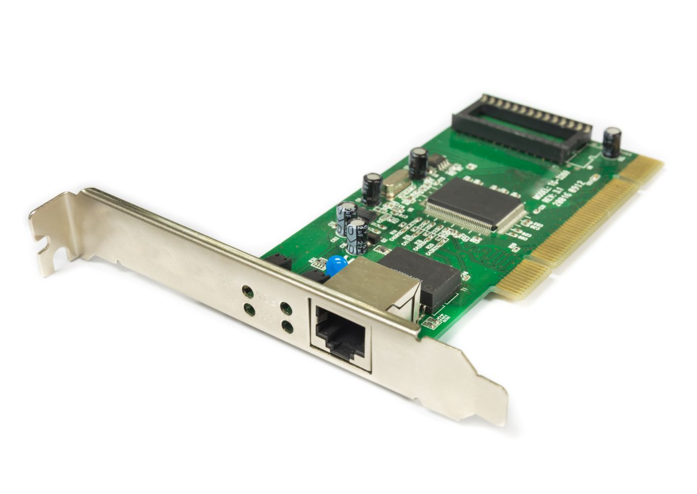
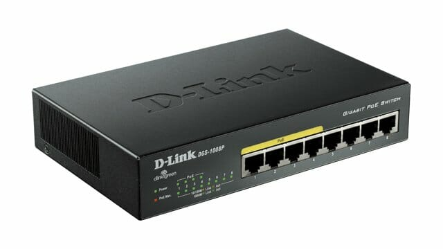
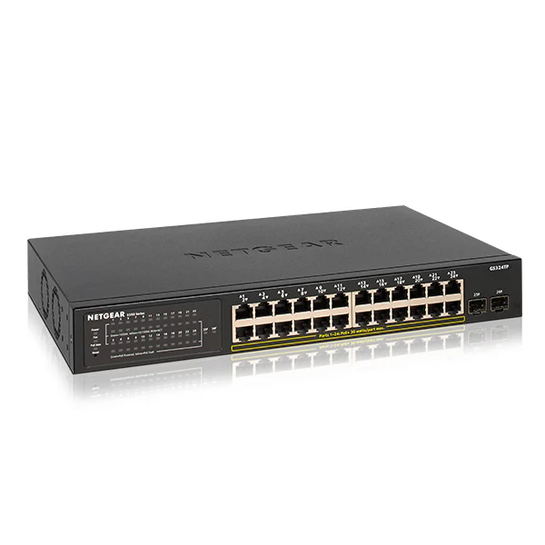
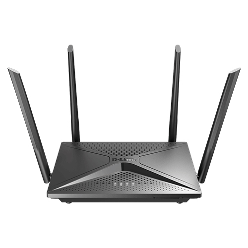
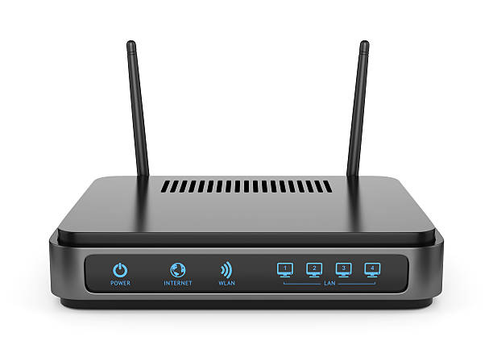
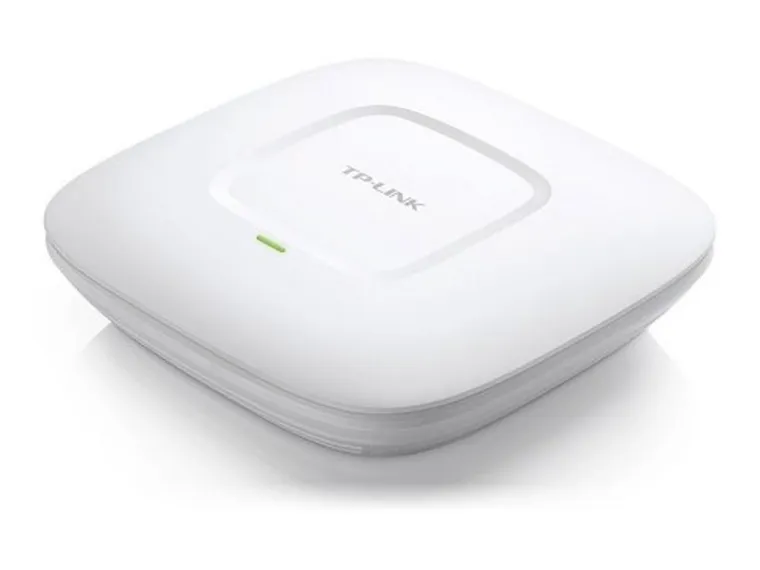
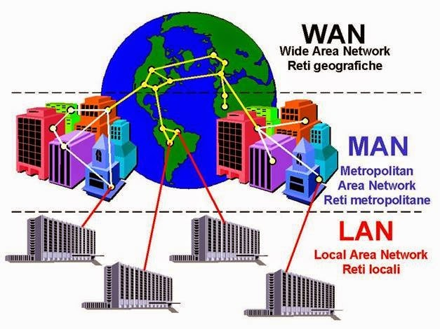
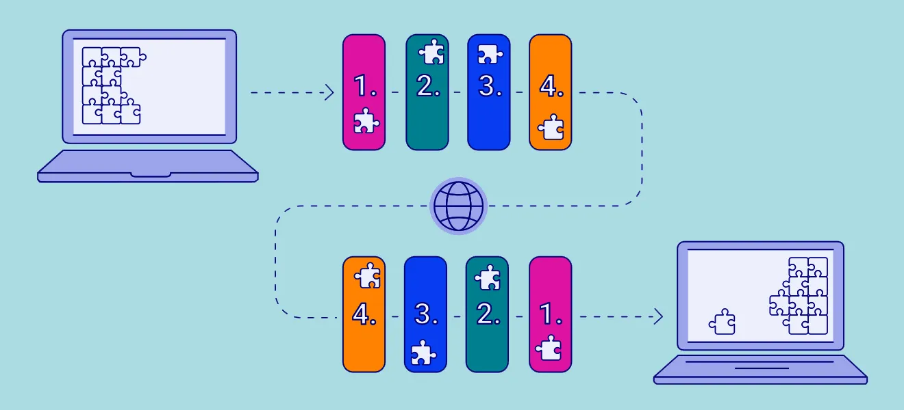

Apa Itu Jaringan? Pengertian, Istilah, Macam-Macam Jaringan
Di era digital saat ini, jaringan komputer telah menjadi tulang punggung komunikasi dan pertukaran informasi di seluruh dunia. Dari internet yang menghubungkan miliaran perangkat hingga jaringan lokal di rumah atau kantor, jaringan komputer memungkinkan kita untuk terhubung, berbagi data, dan berkolaborasi dengan cara yang tidak pernah terbayangkan sebelumnya.
Pengertian Jaringan Komputer
Jaringan komputer adalah sekelompok komputer dan perangkat lain yang saling terhubung dan dapat berkomunikasi satu sama lain untuk berbagi sumber daya dan informasi. Sumber daya yang dibagi dapat berupa data, printer, koneksi internet, atau perangkat keras lainnya.
Pada dasarnya, jaringan komputer terdiri dari dua atau lebih perangkat yang terhubung melalui media transmisi seperti kabel atau nirkabel, menggunakan protokol komunikasi tertentu untuk memfasilitasi pertukaran data. Setiap perangkat dalam jaringan memiliki identitas unik yang disebut alamat IP (Internet Protocol) yang memungkinkan perangkat tersebut diidentifikasi dan berkomunikasi dengan perangkat lain.
Komponen Utama Jaringan Komputer
Untuk membangun dan mengoperasikan jaringan komputer, diperlukan beberapa komponen utama:
1. Perangkat Keras (Hardware)
Perangkat keras jaringan adalah komponen fisik yang digunakan untuk membangun infrastruktur jaringan. Beberapa perangkat keras jaringan yang umum digunakan antara lain:
- Network Interface Card (NIC) - Kartu jaringan yang terpasang pada komputer untuk menghubungkannya ke jaringan 
- Hub - Perangkat sederhana yang menghubungkan beberapa perangkat dalam jaringan dan mengirimkan data ke semua perangkat yang terhubung 
- Switch - Perangkat yang lebih cerdas dari hub, dapat mengirimkan data hanya ke perangkat tujuan 
- Router - Perangkat yang menghubungkan dua atau lebih jaringan berbeda dan mengarahkan lalu lintas data antar jaringan 
- Modem - Perangkat yang mengubah sinyal digital menjadi sinyal analog dan sebaliknya, biasanya digunakan untuk koneksi internet 
- Access Point - Perangkat yang memungkinkan perangkat nirkabel terhubung ke jaringan kabel 
2. Media Transmisi
Media transmisi adalah saluran fisik atau nirkabel yang digunakan untuk mentransmisikan data antar perangkat dalam jaringan. Beberapa jenis media transmisi yang umum digunakan:
- Kabel Twisted Pair - Kabel yang terdiri dari pasangan kawat tembaga yang dipilin, seperti kabel UTP (Unshielded Twisted Pair) dan STP (Shielded Twisted Pair)
- Kabel Koaksial - Kabel dengan konduktor tembaga di tengah yang dikelilingi oleh lapisan isolasi dan pelindung
- Kabel Fiber Optik - Kabel yang menggunakan serat kaca atau plastik untuk mentransmisikan data menggunakan pulsa cahaya
- Nirkabel (Wireless) - Menggunakan gelombang radio untuk mentransmisikan data tanpa kabel fisik
3. Perangkat Lunak (Software)
Perangkat lunak jaringan adalah program komputer yang memungkinkan perangkat dalam jaringan untuk berkomunikasi dan berbagi sumber daya. Beberapa jenis perangkat lunak jaringan meliputi:
- Sistem Operasi Jaringan - Seperti Windows Server, Linux, atau Unix yang menyediakan layanan jaringan
- Protokol Jaringan - Seperti TCP/IP, HTTP, FTP yang mengatur bagaimana data ditransmisikan dalam jaringan
- Firewall - Perangkat lunak yang melindungi jaringan dari akses tidak sah
- Antivirus - Perangkat lunak yang melindungi jaringan dari malware
"Jaringan komputer adalah seperti sistem saraf digital yang menghubungkan dan mengkoordinasikan seluruh ekosistem teknologi informasi modern."
Macam-Macam Jaringan Komputer
Berdasarkan cakupan geografisnya, jaringan komputer dapat dibagi menjadi beberapa jenis:
1. Personal Area Network (PAN)
PAN adalah jaringan komputer terkecil yang biasanya digunakan untuk perangkat pribadi dalam jarak dekat, sekitar 10 meter. Contoh PAN adalah koneksi Bluetooth antara smartphone dan headset, atau koneksi antara komputer dan printer di meja kerja.
$ hcitool scan
Scanning ...
00:1A:7D:DA:71:13 Bluetooth Headset
00:1B:44:11:3A:B7 Smartphone2. Local Area Network (LAN)
LAN adalah jaringan yang mencakup area geografis yang terbatas, seperti rumah, kantor, atau kampus. LAN biasanya dikelola oleh satu organisasi dan menggunakan teknologi seperti Ethernet atau Wi-Fi.
$ ifconfig
eth0: flags=4163<UP,BROADCAST,RUNNING,MULTICAST> mtu 1500
inet 192.168.1.100 netmask 255.255.255.0 broadcast 192.168.1.255
inet6 fe80::215:5dff:fe01:7cad prefixlen 64 scopeid 0x20<link>
ether 00:15:5d:01:7c:ad txqueuelen 1000 (Ethernet)3. Metropolitan Area Network (MAN)
MAN adalah jaringan yang mencakup area geografis yang lebih besar dari LAN, seperti kota atau kabupaten. MAN biasanya dikelola oleh beberapa organisasi dan menggunakan teknologi seperti fiber optik.
4. Wide Area Network (WAN)
WAN adalah jaringan yang mencakup area geografis yang sangat luas, seperti negara atau benua. Internet adalah contoh terbesar dari WAN. WAN biasanya menggunakan kombinasi teknologi kabel dan nirkabel.
$ traceroute google.com
traceroute to google.com (142.250.4.102), 30 hops max, 60 byte packets
1 _gateway (192.168.1.1) 3.171 ms 3.144 ms 3.122 ms
2 10.20.30.1 (10.20.30.1) 15.067 ms 15.041 ms 15.018 ms
3 172.16.10.1 (172.16.10.1) 20.133 ms 20.106 ms 20.083 ms
4 * * *
5 108.170.245.97 (108.170.245.97) 25.199 ms 25.172 ms 25.149 ms
6 142.250.4.102 (142.250.4.102) 30.265 ms 30.238 ms 30.215 msTopologi Jaringan

Topologi jaringan adalah pengaturan fisik atau logis dari perangkat dalam jaringan. Beberapa topologi jaringan yang umum digunakan:
1. Topologi Bus
Dalam topologi bus, semua perangkat terhubung ke satu kabel utama (backbone). Data yang dikirim oleh satu perangkat akan diterima oleh semua perangkat lain dalam jaringan.
2. Topologi Star (Bintang)
Dalam topologi star, semua perangkat terhubung ke satu perangkat pusat, seperti hub atau switch. Data yang dikirim oleh satu perangkat akan melewati perangkat pusat sebelum mencapai perangkat tujuan.
$ netstat -r
Kernel IP routing table
Destination Gateway Genmask Flags MSS Window irtt Iface
default _gateway 0.0.0.0 UG 0 0 0 eth0
192.168.1.0 0.0.0.0 255.255.255.0 U 0 0 0 eth03. Topologi Ring (Cincin)
Dalam topologi ring, setiap perangkat terhubung ke dua perangkat lain, membentuk lingkaran tertutup. Data bergerak dalam satu arah dari satu perangkat ke perangkat berikutnya hingga mencapai perangkat tujuan.
4. Topologi Mesh (Jala)
Dalam topologi mesh, setiap perangkat terhubung langsung ke beberapa atau semua perangkat lain dalam jaringan. Topologi ini menyediakan redundansi dan toleransi kesalahan yang tinggi.
5. Topologi Tree (Pohon)
Topologi tree adalah kombinasi dari topologi bus dan star, di mana beberapa jaringan star terhubung ke kabel backbone seperti dalam topologi bus.
Protokol Jaringan
Protokol jaringan adalah seperangkat aturan yang mengatur bagaimana data ditransmisikan dalam jaringan. Beberapa protokol jaringan yang umum digunakan:
1. TCP/IP (Transmission Control Protocol/Internet Protocol)
TCP/IP adalah suite protokol yang digunakan di internet dan sebagian besar jaringan komputer. TCP/IP terdiri dari beberapa protokol, termasuk TCP, IP, UDP, ICMP, dan lainnya.
$ ping google.com
PING google.com (142.250.4.102) 56(84) bytes of data.
64 bytes from lax31s18-in-f14.1e100.net (142.250.4.102): icmp_seq=1 ttl=116 time=30.2 ms
64 bytes from lax31s18-in-f14.1e100.net (142.250.4.102): icmp_seq=2 ttl=116 time=30.3 ms
64 bytes from lax31s18-in-f14.1e100.net (142.250.4.102): icmp_seq=3 ttl=116 time=30.2 ms
--- google.com ping statistics ---
3 packets transmitted, 3 received, 0% packet loss, time 2003ms
rtt min/avg/max/mdev = 30.215/30.265/30.315/0.050 ms2. HTTP/HTTPS (Hypertext Transfer Protocol/Secure)
HTTP dan HTTPS adalah protokol yang digunakan untuk mentransmisikan halaman web di internet. HTTPS adalah versi aman dari HTTP yang menggunakan enkripsi SSL/TLS.
3. FTP (File Transfer Protocol)
FTP adalah protokol yang digunakan untuk mentransmisikan file antara komputer dalam jaringan.
4. SMTP (Simple Mail Transfer Protocol)
SMTP adalah protokol yang digunakan untuk mengirim email.
5. DNS (Domain Name System)
DNS adalah protokol yang digunakan untuk menerjemahkan nama domain (seperti google.com) menjadi alamat IP.
$ nslookup google.com
Server: 192.168.1.1
Address: 192.168.1.1#53
Non-authoritative answer:
Name: google.com
Address: 142.250.4.102
Name: google.com
Address: 2607:f8b0:4004:814::200eKesimpulan
Jaringan komputer telah menjadi bagian integral dari kehidupan modern, memungkinkan kita untuk terhubung dan berbagi informasi dengan cara yang tidak pernah terbayangkan sebelumnya. Dari jaringan kecil di rumah hingga internet global, jaringan komputer telah merevolusi cara kita berkomunikasi, bekerja, dan hidup.
Memahami dasar-dasar jaringan komputer, termasuk komponen, jenis, topologi, dan protokol, adalah langkah pertama yang penting dalam mempelajari teknologi jaringan. Dengan pengetahuan ini, Anda dapat mulai mengeksplorasi lebih dalam tentang bagaimana jaringan komputer bekerja dan bagaimana mereka dapat dioptimalkan untuk kebutuhan spesifik.
Comments (0)